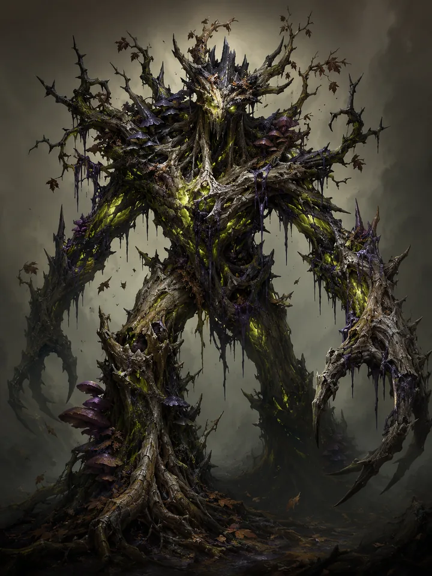

A

ALCHEMY · DESIGN TOOLS

Settings save in this browser.
This is a standalone design tool using Alchemy artwork and representative icons. It never reads or changes a save. Alchemy and Trinket presets reproduce their source timing and scale curves; Trinket’s points are represented as CSS pixels on the same portrait so movement can be compared. Native fonts, raster fitting, exact production packing, audio, portrait recoil, and card flights are not reproduced. Stacking and merging simulate each policy; validate a chosen design in the game before adopting it. Baselines: Alchemy ac4c10cd1; Trinket 65c079a36.
Use the repeated-hit sequences to compare merge policies, the mixed sequence for status hierarchy, and the dense sequence for stacking. All visible controls affect candidate B. Scrubbing pauses playback.